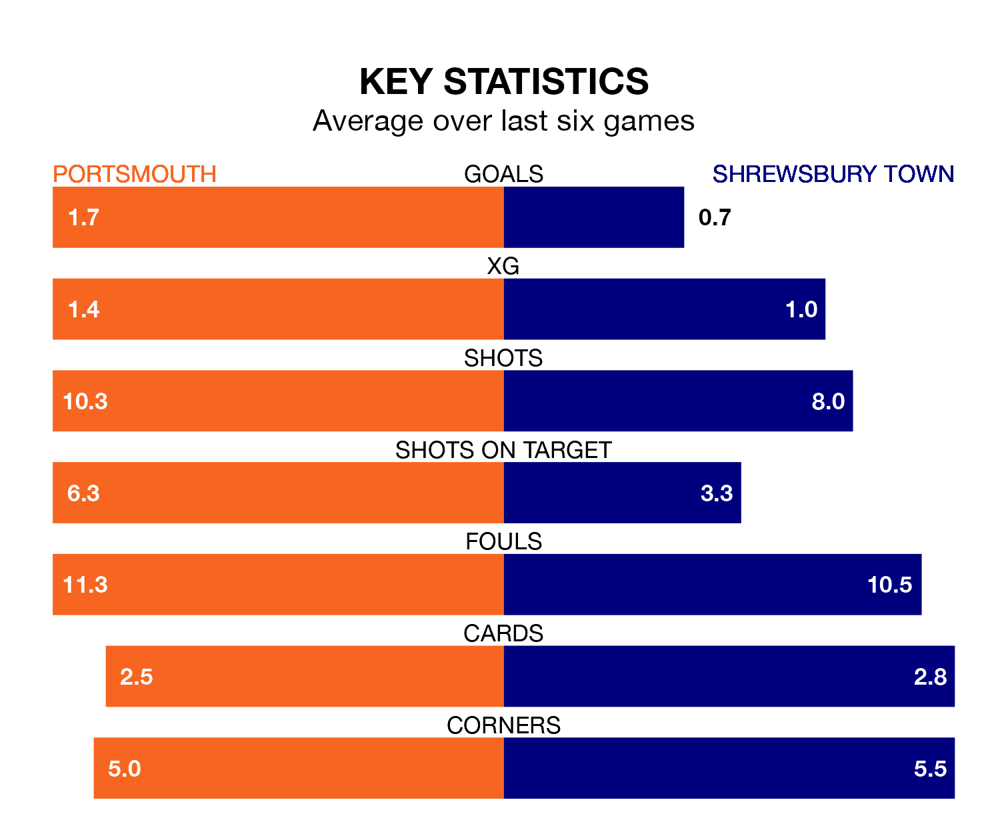

Portsmouth are heavy favourites to keep all three points at home in Saturday's kick-off against Shrewsbury Town.
Pompey, who sit top of EFL League One with 41 games played, are priced at 1.4 to seal victory at Fratton Park.
Sitting 17 places and 41 points behind them in the table, Shrewsbury are 8.0 to win with *Betting Company*, while the draw is at 4.6.
With Will Norris between the sticks, Portsmouth can rely on one of the league's safest pair of hands. He has kept 18 clean sheets in his 41 appearances this season, and no 'keeper has prevented the opposition scoring more often in EFL League One.
In Shrewsbury's net, Marko Maroši has 10 clean sheets in 38 games. He has conceded a goal every 79 minutes, 50% more often than the 115 minutes between goals for Norris.
With 30 goals in 41 games so far this season, Town are the league's lowest scorers with 0.7 goals per game. And they are conceding more than average, letting in 56 goals at a rate of 1.4 per game.
Pompey, meanwhile, are above average scorers, with 1.7 goals per game, compared to a league average of 1.3. They have conceded 0.9 goals per game.
In the last 10 years, Portsmouth and Shrewsbury have played each other on 13 occasions. Portsmouth won six of them, Shrewsbury three, and they drew four times.
On average, Pompey scored 1.2 goals and the Shrews 0.7 in those matches.
Their last meeting was on December 16, when Portsmouth won 3-0 away.
The home team are in good form in EFL League One, with four wins and two draws from their last six games.
With two wins and two draws over that period, the Shrews' form is much worse – they have taken eight points from 18, compared to Portsmouth's 14.
Portsmouth's last match was on Tuesday, a 2-2 draw against Derby County, with Abu Kamara getting the goals for Pompey.
Shrewsbury drew 0-0 with Bristol Rovers last time out, on Monday.
Saturday's match will be refereed by Charles Breakspear, who has taken charge of 16 EFL League One games so far this season, issuing six red cards and booking 88 players. He has awarded seven penalties.
The last Portsmouth game Breakspear refereed was a 2-1 home win against Stevenage on January 1. His last Shrewsbury match was their 3-0 loss away at Oxford United on October 3.
Updated: 16:41 (UTC), 04/04/24